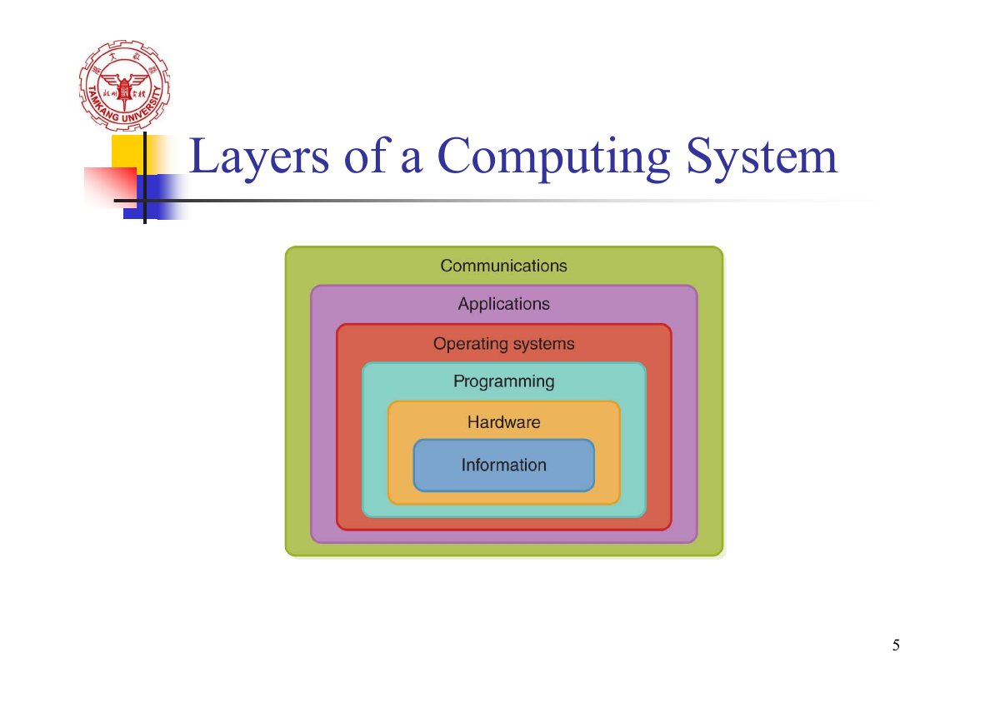

把 Ch01–Ch02
變成真的會用的知識
第一章先讀概念，再動手配對、探索分層、執行模擬，最後用選擇題檢查理解。第二章接著學進位換算與二進位運算。 每讀完一節就按「標記已學」，進度會自動存在這台電腦。
第一章：先弄懂，再記名詞
這一章在回答三個問題：電腦系統由什麼組成？它怎麼一步步發展？計算機科學在研究什麼？先把英文名詞連到它的工作，再記人物和世代，比只背一串縮寫容易。
來源：ch01.pdf 全 22 頁。硬體／軟體世代的年份依講義分期；軟體和設備名稱保留講義中的例子。
Computing System：零件怎麼一起完成工作？
先分清硬體與軟體，再用六層架構看它們如何合作。
講義把 computing system 定義成一個 dynamic entity（動態實體）：它接收環境中的資訊、處理問題，並與環境互動。例如你按下鍵盤，系統處理輸入，畫面顯示文字；這一連串行為就是系統正在運作。
電腦「用什麼」執行工作
Hardware 是實體元件。講義例子有 printer（印表機）、circuit boards（電路板）、wires（線路）、keyboard（鍵盤）。它們能接收、傳送或處理實際的訊號。
辨認方法：看這個名詞指的是設備或元件，還是提供指令的程式。
電腦「按照什麼規則」工作
Software 是提供 instructions（指令）的 programs（程式）。例如「把輸入的文字顯示出來」這個行為，需要軟體告訴硬體要怎麼做。
理解用例：手機的螢幕是硬體；執行中的聊天程式是軟體。作業系統也是軟體。
先分對角色
選一個答案，看原因，再換下一個例子。
六層架構：點一層，看它負責什麼
講義第 5 頁的圖，由內到外是 Information → Hardware → Programming → Operating systems → Applications → Communications。最內層關心資訊，外側逐步加入操作資訊的設備、程式、管理、應用與通訊。
對照講義原本的六層圖

歷史：從記錄數值，到描述計算步驟
把每個人物連到一項貢獻，再理解這項貢獻讓什麼變得可能。
這段歷史可以沿著一條線理解：記錄數值 → 機械運算 → 用編碼控制動作 → 設計計算機 → 撰寫計算步驟 → 研究計算的理論。這樣遇到人物配對題，就能從他的工作找答案。
容易混淆：Babbage vs Ada
Babbage＝機器設計；Ada＝程式與迴圈。兩人都與分析引擎的脈絡有關，但配對時要看題目在問機器，還是程式設計。
早期電腦名稱
Harvard Mark I、ENIAC、UNIVAC I 都是講義列出的早期電腦。講義指出它們開啟數學、物理、工程與經濟等領域的新應用。
Fortran／COBOL／Lisp 是語言；Mosaic／Netscape 是瀏覽器。先判斷名稱是哪一類，選項就容易排除。
先點左邊，再點右邊的貢獻
完成一組就會鎖定；配錯時會解釋那項貢獻對應誰。
硬體四世代：元件、記憶體、儲存一起看
先記代表元件，再補上每一代解決了前一代的什麼問題。
四世代主線是 Vacuum Tube → Transistor → IC → LSI／VLSI。這在描述硬體元件與整合程度的演進；磁鼓、磁芯、磁帶、磁碟則是另一組與記憶及儲存有關的名詞，兩組要分開辨認。
代表元件
記憶體／儲存與設備
這一代記住什麼？
完整比較表
| 世代 | 代表元件與改進 | 其他講義重點 |
|---|---|---|
| 第一代 1951–1959 | Vacuum Tube（真空管） 體積大、可靠度較低、發熱多 | Magnetic Drum（磁鼓）作為記憶體；Card Readers → Magnetic Tape Drives；輔助儲存採循序存取。 |
| 第二代 1959–1965 | Transistor（電晶體）取代真空管 快、小、耐用、便宜 | Magnetic Cores（磁芯）取代磁鼓；Magnetic Disks（磁碟）取代磁帶，可直接存取。 |
| 第三代 1965–1971 | Integrated Circuits（IC） 把原本分散在電路板上的電路整合進晶片；更小、便宜、快、可靠 | 電晶體也用於記憶體；Terminal（終端機）帶有鍵盤和螢幕；講義介紹早期 Moore’s Law。 |
| 第四代 1971 起 | LSI／VLSI（大型／超大型積體電路） 晶片整合技術進步 | PC、Workstations、CISC／RISC、可攜式電腦；講義列 IBM、HP、Apple、Sun；修訂版 Moore’s Law。 |
Sequential vs Direct access
Sequential（循序）像從前面依序讀資料；Direct（直接）能定位要取出的資料。講義用磁帶與磁碟來比較兩者。
理解用例
像要找第六筆紀錄：循序方式一路讀過前面的紀錄；直接方式可指定要找的紀錄。這個比喻用來理解「存取方式」。
CISC vs RISC
CISC＝Complex-instruction-set computer（複雜指令集）。RISC＝Reduced-instruction-set computer（精簡指令集）。
先抓 Complex／Reduced 這兩個英文詞。它們是在分指令集設計；看到名詞，先回答它代表哪種設計。
Portable computer 的講義例子有 notebook、laptop、tablet computer、smart phone。
Moore’s Law：注意講義有兩個版本
早期版本：每年加倍
講義第 11 頁描述：單一 IC 可容納的電路數量，每年加倍。
修訂版：每 18 個月加倍
第 12 頁改以晶片密度描述，約每 18 個月加倍；同價可取得約兩倍能力，或同樣能力的成本約減半。
拉動時間，看看「加倍」如何累積
依講義第 12 頁的 18 個月模型試算，起點設為 1 倍；下列數字為理解用的相對值。
相對晶片密度
2 倍每 18 個月 × 2固定價格下的能力
2 倍依講義的倍增假設固定能力下的成本
50%相對於起點成本把元件與記憶體分清楚
Parallel Computing：分工的是指令，還是資料？
把縮寫拆成 Instruction 與 Data，再看實際的分工。
講義的平行計算是利用相互連接的處理單元或記憶單元增加處理速度。理解 SIMD／MIMD 時，先問兩件事：「大家收到同一種指令嗎？」以及「大家處理的是多份資料嗎？」
Single Instruction, Multiple Data Stream
SI＝單一指令；MD＝多筆資料。多個處理單元使用相同指令，分別作用在不同資料上。
理解用例
四個人分別拿到 2、4、6、8；所有人都接到「加 1」的指令。工作相同，資料不同。
Multiple Instruction, Multiple Data Stream
MI＝多種指令；MD＝多筆資料。不同處理單元可以執行不同指令，處理不同資料。
理解用例
四個人分別接到「加 1、乘 2、減 1、平方」的工作；各自處理自己的資料。
切換架構，觀察每個單元收到的指令
理解示意：使用四組小數字觀察指令與資料的差異。
選 SIMD 或 MIMD
Networking：讓電腦共享資源
從電腦之間的連線，到 Internet 上的資源與雲端運算。
網路讓電腦可以交換資料、共享設備或服務。講義先用 Ethernet 連接小型電腦共享資源，再列出 file server、LAN、ARPANET、Internet、封包交換、TCP/IP，最後介紹雲端運算。
| 名詞 | 核心意思 | 理解用例／辨認重點 |
|---|---|---|
| Ethernet 乙太網路 | 連接電腦，讓資源可以共享。 | 教室中的多台電腦透過網路連線共享資源。 |
| File server 檔案伺服器 | 提供其他電腦存取檔案的服務。 | 講義列出 1980 年代末以 file server 連接 PCs 的發展。 |
| LAN Local Area Network | 區域網路，涵蓋一個較小的本地範圍。 | 同一個教室、辦公室或建築物裡的網路。 |
| ARPANET／Internet | 講義列出的網路發展名稱；Internet 把不同網路互連起來。 | 先分清網路名稱與軟體名稱，遇到選項再判斷它的角色。 |
| Packet switching 封包交換 | 將要傳遞的資料分成封包，透過網路傳送。 | 像把長訊息拆成幾個帶有識別資訊的小包，再由接收端整理。 |
| TCP/IP | Transmission Control Protocol／Internet Protocol。 | TCP 側重有序、可靠的傳送；IP 處理定址與網路間的傳遞。 |
| Cloud Computing 雲端運算 | 使用 Internet 中的電腦資源。 | 透過網路使用遠端的計算或儲存服務。 |
Internet 與 World Wide Web 的關係
Internet 是互連的網路；World Wide Web（WWW）是透過 Internet 使用的網頁服務。講義第 20 頁將 WWW 和 browser 放在第五代軟體的脈絡中。
先想「網路基礎」和「在網路上使用的應用」，比較容易理解兩者的關係。
Cloud 的關鍵：資源在哪裡？
本機計算使用你所在裝置的資源；雲端運算透過 Internet 使用遠端資源。
理解用例
同樣是處理資料，可以由自己電腦的 CPU 執行，也可以交給遠端服務執行，再透過網路取回結果。
跟著 HELLO 走一遍
按「下一步」，觀察分塊、順序標記、抵達順序與接收端重組。
理解示意：用三段資料展示封包傳輸與有序重組的概念。
從用途判斷名詞
軟體五世代：從指令到應用與系統管理
軟體世代看語言、管理方式與應用的發展；先分清各工具在做哪一件事。
早期程式直接用 0、1 表示指令，後來改用助記碼與較接近英文的高階語言；系統軟體再負責連結、載入、排程，讓應用程式更容易被使用。語言的表示方式、程式翻譯、系統管理是三個不同的角色。
| 世代 | 核心發展 | 講義例子／工具 |
|---|---|---|
| 第一代 1951–1959 | Machine Language：二進位 0、1。 Assembly Language：用 mnemonic codes 表示機器指令。 | Assembler 將組合語言翻成機器語言。 |
| 第二代 1959–1965 | High-Level Languages：敘述較接近英文。 需要翻成機器指令才能執行。 | Fortran、COBOL、Lisp；Compiler（編譯器）。 |
| 第三代 1965–1971 | Systems Software、Utility programs、Operating system；管理電腦資源與工作執行。 Time-sharing 讓多位使用者共享一台電腦。 | Loaders、Linkers、Language translators；OS 組織、排程不同的 jobs。 |
| 第四代 1971–1989 | Structured Programming：有邏輯、有組織的程式設計。 作業系統與應用軟體普及。 | Pascal、BASIC、C、C++；PC-DOS、MS-DOS、Macintosh；Lotus 1-2-3、WordPerfect、dBase。 |
| 第五代 1990 起（講義分期） | Object-Oriented Design、World Wide Web、Embedded System。 | Windows／Microsoft 應用；C++、Java；Mosaic、Netscape、IE、Firefox 等瀏覽器。 |
Machine Language → Assembly → High-Level Language
機器語言
直接用 binary（1s and 0s）表示指令。早期程式設計師必須記住不同位元組合代表的操作。
組合語言
用 mnemonic codes（助記碼）代表機器指令，較容易辨認操作；再由 Assembler 翻譯。
高階語言
用較接近英文或人類想法的敘述寫程式；依講義，由 Compiler 翻成機器指令。
| 工具 | 做什麼 | 記憶方式 |
|---|---|---|
| Assembler 組譯器 | 組合語言 → 機器語言。 | Assembly 配 Assembler。 |
| Compiler 編譯器 | 高階語言 → 機器可執行的指令（依講義）。 | 看到 High-Level Language 想 Compiler。 |
| Linker 連結器 | 將大型程式的各片段連結起來。 | Link＝連結片段。 |
| Loader 載入器 | 將程式載入記憶體。 | Load＝載入 Memory。 |
| Operating System 作業系統 | 決定程式何時執行，控制與分配資源。 | 管理／排程。 |
從你寫的程式，到電腦執行
選起點，再按下一步。用一條簡化的路線辨認翻譯、連結、載入與排程各負責什麼。
Time-sharing：多位使用者如何共享一台電腦？
講義描述多位使用者各用一台 terminal（終端機），與同一台電腦互動；OS 會組織並排程不同的 jobs。重點在 CPU 的時間如何被安排。它和前面 SIMD／MIMD 討論多個處理單元的分工，是不同的切入點。
一個 CPU，輪流處理三位使用者的工作
理解示意：此例採輪流分配時間片，每項工作需要 3 片時間。按一下，就看 OS 下一次把 CPU 分給誰。
第四、第五代：看懂這些應用名詞
Structured Programming（結構化程式設計）
講義強調 logical and disciplined：用有邏輯、有組織的方式寫程式。語言例子包含 Pascal、BASIC、C、C++。
這裡的 Pascal 是語言名稱；前面 Blaise Pascal 是歷史人物。看題目的脈絡再判斷。
Application Software（應用軟體）
Spreadsheets：試算表，例 Lotus 1-2-3。Word processors：文書處理，例 WordPerfect。Database management systems：資料庫管理，例 dBase。
它們提供使用者完成具體任務的功能。
Object-Oriented Design（物件導向設計）
講義以資料物件的階層來描述設計，並列 C++、Java 為例。理解時，可以想成將相關資料與行為組織在物件中。
C++ 在講義第四、第五代都出現；辨認世代時，看主題是在說結構化程式設計，還是物件導向。
WWW 與 Embedded System
WWW 透過 Internet 支援全球溝通，Browser 的講義例子有 Mosaic、Netscape、IE、Firefox。
Embedded System（嵌入式系統）把晶片整合到設備中，執行或控制功能。理解用例：設備內的控制晶片依設定調節運作。
翻譯、連結、載入，分得清楚嗎？
Computer as a Tool and a Discipline
把「使用電腦做事」與「研究如何有效率地自動化」連起來。
電腦可以是工具，幫其他領域解決問題；計算機科學也是一個學科，研究如何表示問題、設計步驟、寫成程式，並有效率地自動化。講義最後的根本問題是：What can be efficiently automated?
演算思考：把問題拆成可執行步驟
先想清楚輸入、要做哪些操作、完成條件和輸出。
理解用例 · 計算平均成績
逐筆取出成績 → 相加 → 除以人數 → 得到平均。這是在設計解題步驟。
表示：資料要用什麼形式存放？
選擇能清楚表達問題與資料的形式。
理解用例 · 同一個成績問題
把學生名字與成績整理成表格，或將成績放成一串數值。這是在決定資料如何表示。
程式設計：讓電腦照步驟執行
把想好的計算步驟，用程式語言表達。
理解用例
寫迴圈逐筆加總，最後計算平均並顯示結果。這是在實作演算法。
設計：規劃整體如何合作
安排系統的流程、功能與各部分的關係，讓使用者能完成目標。
理解用例
規劃成績輸入、資料檢查、平均計算與結果呈現的完整流程。
這個動作主要在做什麼？
第一章選擇題
直接點 A／B／C／D。答完看解析，再按「下一題」。題目依第一章講義整理。
這輪完成
Number Systems & Positional Notation
進位真正的核心只有一件事：每個位置都有不同的 base 次方權重。
常見進位
- Binary：base 2 → 0, 1
- Octal：base 8 → 0–7
- Decimal：base 10 → 0–9
- Hexadecimal：base 16 → 0–9, A–F
數字集合
- Natural numbers（自然數，N）
- Negative numbers（負數）
- Integers（整數，Z）
- Rational numbers（有理數，Q）
- Real numbers（實數，R）
Base（基底）是什麼？
0–15 四種進位對照
| Decimal | Binary | Octal | Hex |
|---|---|---|---|
| 0 | 0000 | 00 | 0 |
| 1 | 0001 | 01 | 1 |
| 2 | 0010 | 02 | 2 |
| 3 | 0011 | 03 | 3 |
| 4 | 0100 | 04 | 4 |
| 5 | 0101 | 05 | 5 |
| 6 | 0110 | 06 | 6 |
| 7 | 0111 | 07 | 7 |
| 8 | 1000 | 10 | 8 |
| 9 | 1001 | 11 | 9 |
| 10 | 1010 | 12 | A |
| 11 | 1011 | 13 | B |
| 12 | 1100 | 14 | C |
| 13 | 1101 | 15 | D |
| 14 | 1110 | 16 | E |
| 15 | 1111 | 17 | F |
位置記數法
每一位數字 dᵢ 乘上 base b 的對應次方，再全部相加。
教材先用 Decimal 說明位置記數法
例 1：Hex → Decimal
例 2：Base 13 → Decimal
教材例：Binary → Decimal
教材例：Octal → Decimal
進位轉換：三個方法
不同方向用不同方法，會比硬背所有表格簡單很多。
其他進位 → 10 進位
使用位置權重：每位數 × base 的次方後相加。
10 進位 → 其他進位
整數常用「反覆除以 base，記錄餘數，再由下往上讀」。
2 ↔ 8 / 16
Octal 每 1 位對應 3 bits；Hex 每 1 位對應 4 bits。
考試怎麼算：先判斷是哪一種題型
① 其他進位 → 10 進位：乘權重再相加
例：(30B)₁₆ → (?)₁₀
16 進位中 A=10、B=11、C=12、D=13、E=14、F=15。
從最右邊開始，位數權重依序是 16⁰、16¹、16²⋯。
答案： (30B)₁₆ = (779)₁₀
其實和十進位 352 = 3×10² + 5×10¹ + 2×10⁰ 是同一個概念，只是把 base 換成 16。
② 10 進位 → 其他進位：一直除，餘數倒著讀
例：(2748)₁₀ → (?)₁₆
| 計算 | 商 | 餘數 |
|---|---|---|
| 2748 ÷ 16 | 171 | 12 = C |
| 171 ÷ 16 | 10 | 11 = B |
| 10 ÷ 16 | 0 | 10 = A |
餘數一定要由下往上讀：A → B → C。
最常錯：把餘數由上往下讀成 CBA。
③ Binary ↔ Octal / Hex：直接分組
因為 8 = 2³，所以 Binary ↔ Octal 每 3 bits 一組；16 = 2⁴，所以 Binary ↔ Hex 每 4 bits 一組。
Binary → Hex
例：(10010110)₂
所以 (10010110)₂ = (96)₁₆。
Binary → Octal
從右邊每 3 bits 分組，不足時在左邊補 0。
所以 (10010110)₂ = (226)₈。
課本例題
(2748)₁₀ → Hex
同一個值的不同表示
Binary Arithmetic
二進位加法規則少，但進位的位置很容易粗心。
| 運算 | 結果 | 說明 |
|---|---|---|
| 0 + 0 | 0 | 不進位 |
| 0 + 1 / 1 + 0 | 1 | 不進位 |
| 1 + 1 | 10₂ | 寫 0，進 1 |
| 1 + 1 + 1 | 11₂ | 寫 1，進 1 |
教材例題：二進位直式相加
和十進位直式加法一樣，從最右邊開始，只是二進位逢 2 就進位。
第一步：最右邊 1 + 1 = 10₂，所以這一欄寫 0，往左進 1。
第二步：下一欄要把進位一起加：1 + 1 + 1 = 11₂，所以寫 1，再進 1。
後面每一欄都照同樣規則往左算，最後得到 (10100010)₂。
Binary Subtraction（二進位減法）
先記 4 個基本情況
| 運算 | 結果 | 要不要借位 |
|---|---|---|
| 0 − 0 | 0 | 不用 |
| 1 − 0 | 1 | 不用 |
| 1 − 1 | 0 | 不用 |
| 0 − 1 | 1 | 要：先變成 10₂ − 1₂ |
最簡單借位：10₂ − 1₂
最右邊是 0 − 1，不夠減，所以向左邊的 1 借 1。
左邊的 1 變成 0；右邊的 0 得到 10₂，所以 10₂ − 1₂ = 1₂。
連續借位：中間遇到 0 怎麼辦？
例如 1000₂ − 0001₂。最右邊 0 − 1 不夠，但左邊緊鄰的兩欄也都是 0，所以要一路往左找到第一個 1。
最左邊的 1 借出去後變 0；借位一路傳過兩個 0，最後右邊三欄都能完成減法，所以 (1000)₂ − (1)₂ = (111)₂。
教材例題：逐欄看 borrow
從最右邊開始：
- 第 1 欄：1 − 1 = 0。
- 第 2 欄：1 − 1 = 0。
- 第 3 欄：1 − 0 = 1。
- 第 4 欄：0 − 1 不夠，向左借 1 → 10₂ − 1₂ = 1。
- 第 5 欄：因為剛剛被借走，這欄變成 0；現在又是 0 − 1，所以要再向左借。
- 左邊下一欄也是 0，因此借位要再往左找到 1，再把 borrow 傳回來。
- 剩下各欄完成相減後，結果是 0011100₂。
Bit、Byte、Word 與 32/64-bit
把單位關係背成倍數會比零散記憶容易。
| 名稱 | Bytes | Bits |
|---|---|---|
| Byte | 1 Byte | 8 bits |
| Half Word | 2 Bytes | 16 bits |
| Full Word | 4 Bytes | 32 bits |
| Double Word | 8 Bytes | 64 bits |
32-bit / 64-bit machines
32-bit machine
教材定義：電腦處理時以 32-bit data 為一個單位；每個 time interval 可處理 32-bit data。
64-bit machine
教材接著列出 64-bit machines；理解時對照 32-bit machine，重點是資料處理單位提升為 64 bits。
進位制轉換器
先自己算，再用工具核對。支援 base 2 / 8 / 10 / 16。
1001011022615096隨機練習
考前必會清單
勾選狀態會保留。全部都能不看筆記回答，再進考場。
自我測驗
先在腦中回答，再點開答案。能解釋原因才算真的會。